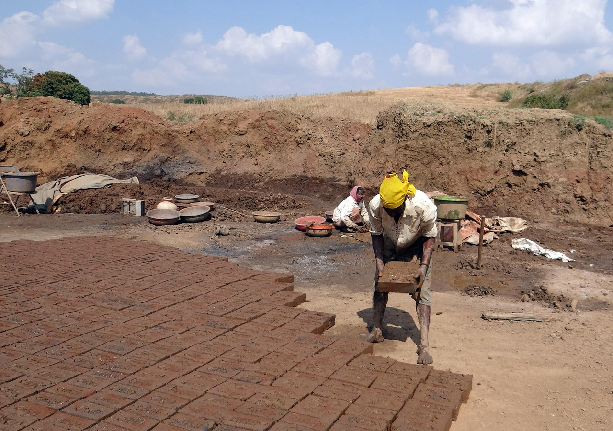
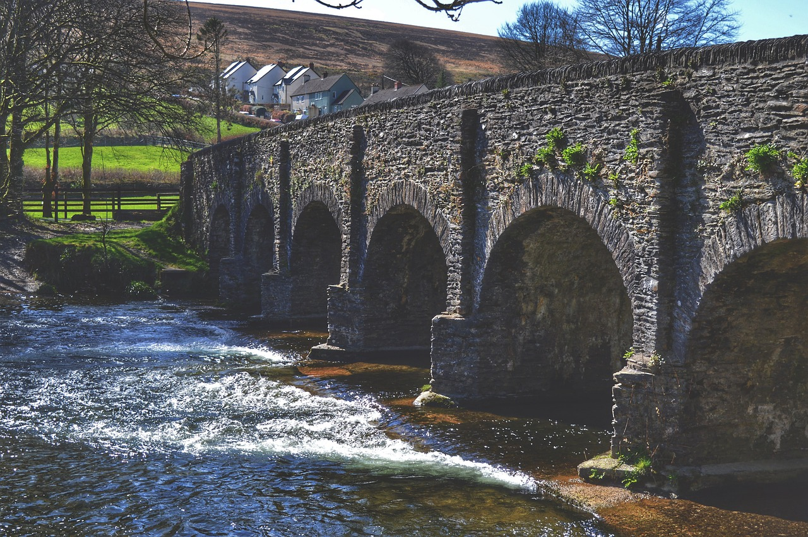
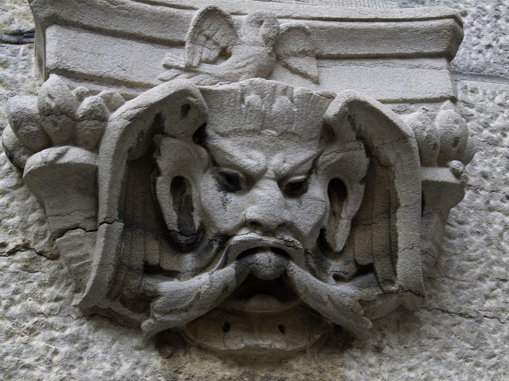

What Restoration Masonry Actually Is
Restoration masonry is the repair and preservation of existing masonry: historic brick buildings, stone walls, chimneys, foundations, arches, facades, and old mortar joints that have weathered decades (or centuries). The headline work is often repointing / tuckpointing, but it can also include selective demolition, replacing damaged units, crack stitching, cleaning, water management fixes, and rebuilding sections without changing the look.
The core reality: most failures aren’t “because brick is weak.” They’re usually from water, movement/settlement, or incompatible past repairs (like hard modern mortar on soft historic brick). Restoration starts with identifying why the masonry is failing — and then choosing a fix that doesn’t create a new failure.



What You Spend Time Doing
Restoration is slow because the material is already there and already fragile. You’re not racing a wall upward. You’re removing failed material without chewing up good material, then rebuilding the performance without changing the look.
- Assessment: mapping cracks, bulges, spalling, loose units, moisture paths, and prior repair problems.
- Careful removal: raking out joints, removing failed mortar, cutting out damaged units without collateral damage.
- Mortar mixing + matching: lime vs cement ratios, aggregate size, color matching, texture matching, tooling profiles.
- Repointing: packing joints correctly, controlling depth, finishing joints consistently, keeping edges crisp.
- Selective rebuild: replacing bricks/stones, stitching cracks, rebuilding chimneys or parapet sections as needed.
- Cleaning + protection: appropriate cleaning methods, water management, flashing/drip edges, and letting masonry breathe.
In restoration, “do less” is often the correct move. Over-aggressive grinding, cleaning, or hard mortar can permanently damage old masonry. The job rewards restraint and compatibility, not brute force.
Where the Pressure Comes From
The pressure comes from two things: irreversibility and standards. If you chip historic brick edges or smear the face, you can’t un-do it. If you choose the wrong mortar, you may accelerate failure. And because restoration is visible, you’re judged by whether your work blends and whether the building performs better afterward.
There’s also hidden pressure: clients often don’t understand why careful work costs time. You may have to stay patient while explaining that “fast” can mean “expensive damage.”
What Traits Actually Matter
Restoration masonry rewards people who like careful diagnosis and controlled execution. You need hands that can be precise — and a brain that respects cause-and-effect.
- Diagnostic thinking: you want to understand why it failed before you “fix” it.
- Patience under slow progress: restoration often feels like inches, not feet.
- Detail stability: consistent joints, clean tooling, and tidy edges matter.
- Material sensitivity: you respect old brick/stone and choose methods that don’t destroy it.
- Restraint: you can stop before “one more pass” becomes damage.
Restoration masons are part craftsperson, part investigator. The job is less about speed and more about making the building behave for the next 50 years.
Who Should Probably Avoid It
If this is your lane, you’ll feel it. If it isn’t, restoration can feel like slow-motion frustration.
- You need fast visible progress: restoration is methodical, not rapid stacking.
- You hate “fussy” details: joints, profiles, and cleanup are a big part of the work.
- You want production repetition: restoration changes building-to-building and requires judgment calls.
- You dislike diagnosing before acting: “just fix it” thinking causes bad repairs here.
- You get bored by careful removal: raking out joints and selective demo is a lot of the job.
If you want masonry with a more straightforward rhythm, compare with bricklaying or concrete finishing. If you love aesthetics and material selection, compare with stone masonry.
The “Restoration Mason Brain” vs Other Masonry Paths
Restoration is its own mental environment. It’s not about building the fastest wall. It’s about making a repair that is compatible, durable, and visually quiet. Your best work is the work nobody notices — because it looks original.
- Compared to new bricklaying: more diagnosis and removal, less stacking rhythm.
- Compared to concrete finishing: less time-window sprinting, more slow precision and compatibility.
- Compared to stone masonry: less shaping/setting aesthetic pieces, more joint/mortar and water-management thinking.
Next Step: Get a Signal, Then Compare
If restoration masonry sounds appealing, don’t decide based on “historic buildings are cool.” Decide based on whether you can live inside the work: careful removal, mortar matching, tidy joints, and patient diagnosis.
Run the Restoration Masonry Fit Diagnostic first. Then compare paths from the Masonry Hub or step back to the Trades Hub. If you want the full map, start at the homepage.